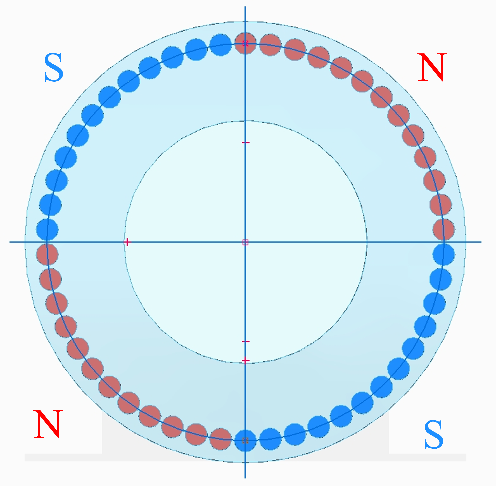
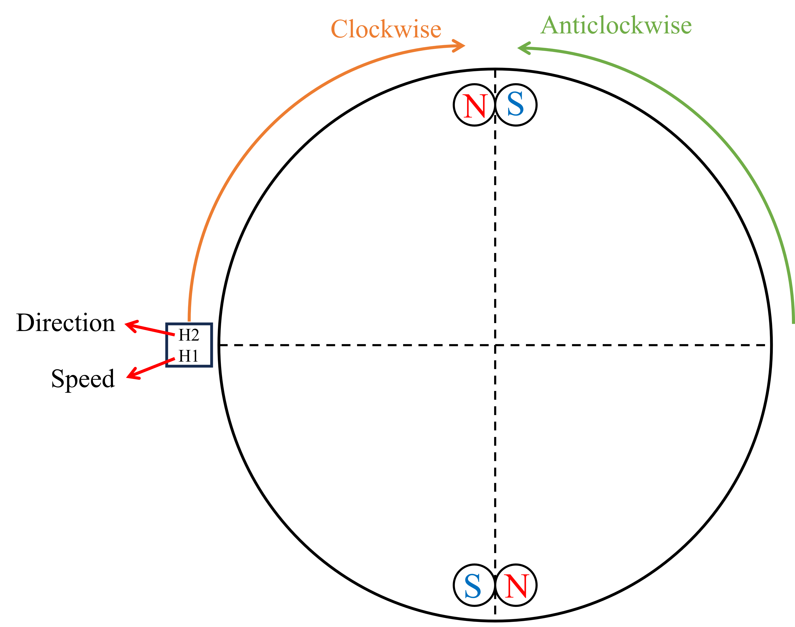
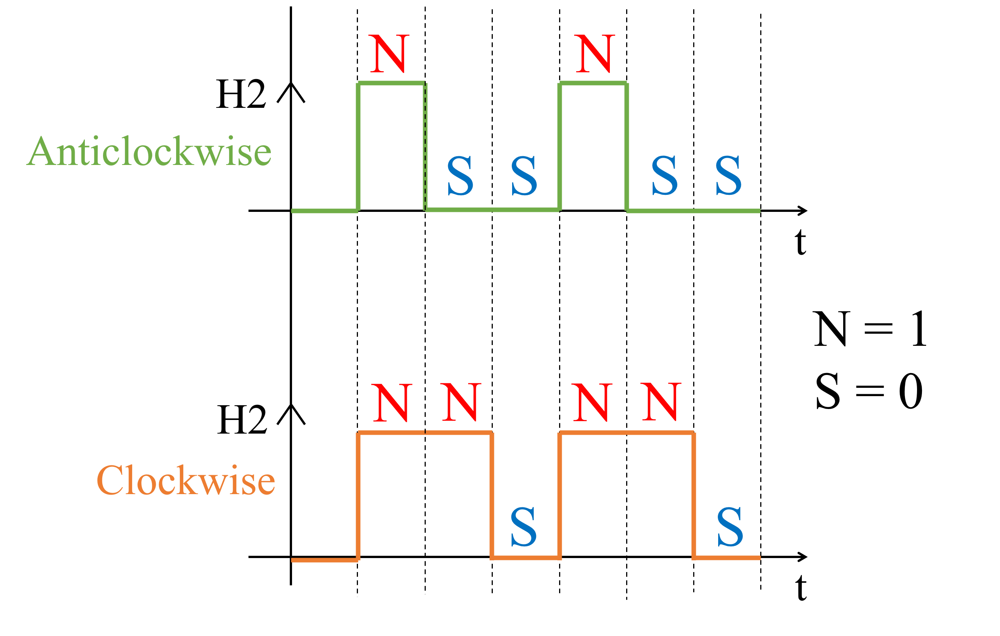
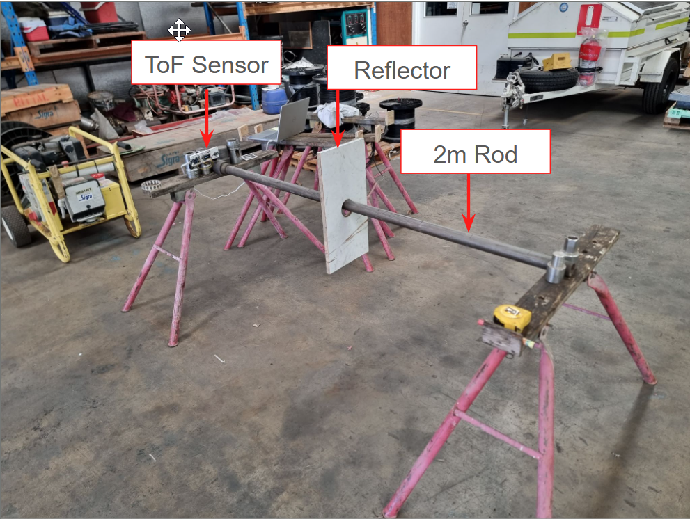
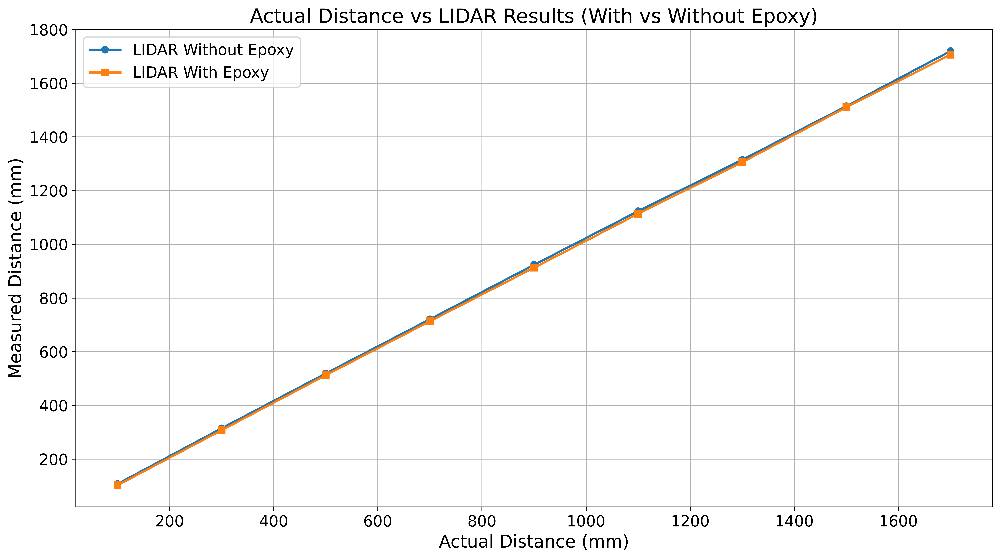
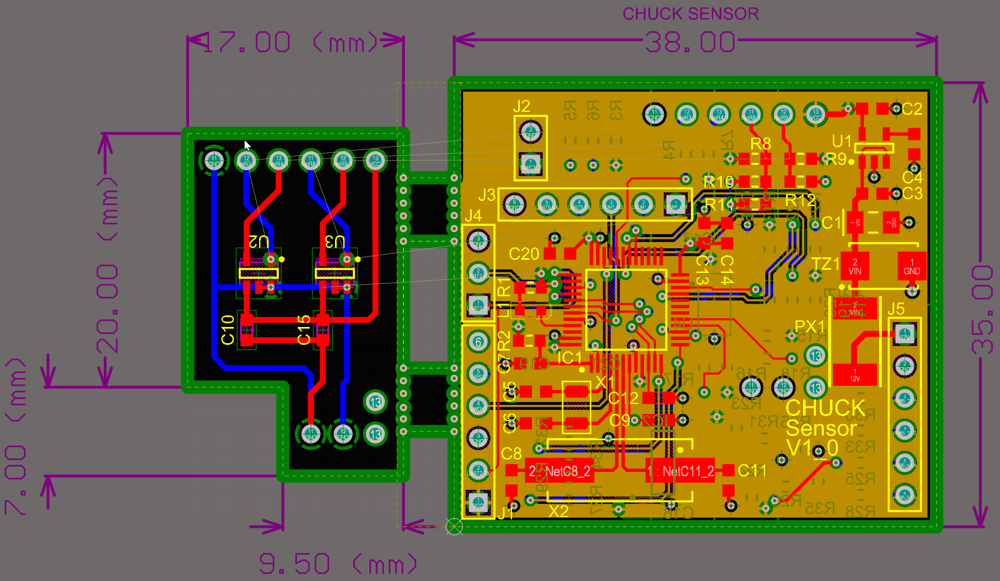

01 — Application
Why Chuck Sensing Matters on a Drill Rig
The chuck is the rotating mechanism at the heart of a drill rig — it grips and drives the drill string into the ground. During normal drilling, the chuck rotates in one direction at a controlled speed. But during rod make-up and break-out operations — adding or removing drill rods as the hole deepens — the rotation direction must reverse. Getting this wrong has real consequences: a chuck rotating in the wrong direction during rod make-up can jam, cross-thread, or snap the drill rod, potentially damaging the rig and creating a safety hazard for the crew nearby.
Beyond safety, drill depth and rod count are typically tracked manually by operators on a paper logsheet — recording each rod insertion and estimated depth by hand. This is slow, error-prone, and adds cognitive load to an already demanding job. A sensing system that measures chuck RPM, direction, and linear feed stroke in real time enables two things simultaneously: safety verification of correct make/break rotation behaviour, and automated depth tracking that replaces the manual logsheet.
Safety
Direction Verification
Real-time CW/CCW detection confirms correct rotation during rod make/break, preventing cross-threading and rod damage.
Operations
RPM Monitoring
Live rotation speed enables better operational control — selecting appropriate RPM for different rock structures and directional drilling conditions.
Automation
Depth Estimation
Stroke sensing accumulates linear feed travel, enabling automated rod count and drilling depth estimation — replacing manual logsheets.
02 — Rotation Sensing
From Two Hall Switches to a Dual-Latch Sensor
The initial approach to rotation sensing used a commercial Hall-effect switch module (XC-4434) with a single magnet mounted on the rotating target. Early testing on an Arduino MKR Zero confirmed that RPM measurement was straightforward — pulse period from a single magnet gives a clean speed signal, validated on a lathe across a range of approximately 35 to 2000 RPM. Direction sensing, however, proved harder.
A two-sensor, one-magnet configuration was tested to extract directional information from phase offset between the two outputs. It did not produce a consistent or repeatable phase relationship — there was no reliable signature to detect reversal, making direction classification unstable. A four-sensor quadrature arrangement was considered as a fallback, but it increased hardware complexity without solving the fundamental problem.
The solution was a dedicated dual Hall-effect latch sensor — a single package integrating two Hall sensing elements with offset cancellation, an internal voltage regulator, and dual open-drain outputs: SP for speed and DIR for direction. The device is designed to determine direction from a specific magnetic field sequence generated by an alternating North–South pole encoder ring. This is where the real engineering challenge began.
03 — Direction Detection
A 4-Magnet Solution to a 50-Magnet Problem
The dual latch sensor determines rotation direction from a defined alternating N–S pole sequence. For the chuck application, replicating this on the large-diameter magnet housing disk would require approximately 50 magnets arranged in a full alternating-pole ring — an approach that was impractical due to high component count, assembly complexity, and cost.
Magnet Housing Disk

Datasheet Requirement

Additionally, experimental testing on the lathe showed that the DIR output behaviour was highly sensitive to sensor-to-magnet spacing and alignment, making it difficult to obtain a stable direction signal using a conventional arrangement. An alternative approach was needed.
The Alternative Magnet Arrangement
Through systematic trial-and-error experiments on the lathe, an alternative magnet geometry was developed that generates a repeatable switching sequence without requiring a full alternating-pole ring. A critical sensor placement window was identified: a sensor-to-magnet offset of approximately 22–24 mm (Y-axis) and 1–3 mm (X-axis) consistently produced the required switching behaviour on the DIR output.
Alternate Magnet Arrangement

Sensor Placement Window

Duty-Cycle as a Direction Signature
With the optimised magnet geometry and sensor placement, distinct pulse patterns emerge for clockwise and anticlockwise rotation. The key insight is that the DIR output duty cycle becomes direction-dependent — and the difference is large enough to be classified robustly.
Key Result
Forward rotation produces a DIR duty cycle of approximately 10%. Reverse rotation produces approximately 94%. This 84-percentage-point separation is stable across the full tested RPM range and provides a robust classification threshold that is unambiguous even in noisy industrial conditions.
An important consequence of this approach is that both speed and direction information can be extracted from the single DIR output pin — RPM from the pulse period, direction from the duty cycle. The SP output pin becomes redundant for this application, reducing wiring complexity and simplifying the MCU interface to a single digital input line.

Switching Sequence Table
| Direction | Step | H1 Field | H1 Output | H2 Field | H2 Output |
|---|---|---|---|---|---|
| Anticlockwise | St(t) | N | 1 | N | 1 |
| St(t+1) | N | 1 | S | 0 | |
| St(t+2) | S | 0 | S | 0 | |
| St(t+3) | N | 1 | N | 1 | |
| St(t+4) | N | 1 | S | 0 | |
| St(t+5) | S | 0 | S | 0 | |
| Clockwise | St(t) | S | 0 | S | 0 |
| St(t+1) | N | 1 | N | 1 | |
| St(t+2) | N | 1 | N | 1 | |
| St(t+3) | S | 0 | S | 0 | |
| St(t+4) | N | 1 | N | 1 | |
| St(t+5) | N | 1 | N | 1 |
04 — Rotation Validation
Waveform and RPM Verification on the Lathe
Validation was performed in two stages. First, oscilloscope captures confirmed the direction-dependent duty-cycle signature across a range of rotation speeds. Second, firmware-calculated RPM was compared against lathe set-speed readings and independent tachometer reference measurements to verify speed accuracy.
Direction Waveforms — CW vs CCW at Multiple Speeds
The following waveform pairs show the DIR output at four representative speeds. In each pair, the left capture is forward rotation (low duty cycle ≈ 10%) and the right is reverse rotation (high duty cycle ≈ 94%). The pattern is consistent across all tested speeds.
Forward — 56 RPM (~10% duty)

Reverse — 56 RPM (~94% duty)

Forward — 208 RPM (~10% duty)

Reverse — 208 RPM (~94% duty)

Forward — 480 RPM (~10% duty)

Reverse — 480 RPM (~94% duty)

Firmware RPM Measurement
Arduino Zero firmware measured RPM by capturing the time period between pulses and converting to frequency and RPM. Calculated values were compared against the lathe set-speed and independent tachometer readings across the full operating range.


05 — Rotation Firmware
Making RPM and Direction Reliable in a Harsh Environment
Challenge
RPM accuracy across a wide speed range — slow speeds produce sluggish updates; high speeds produce timing jitter and interrupt overhead.
Solution
Interrupt-driven edge-to-edge timing with adaptive averaging: more pulses averaged at high speeds for noise reduction, fewer at low speeds for responsiveness. Zero-speed timeout ensures RPM drops reliably to zero at stall.
Challenge
Electrical noise, long cable runs, and EMI from drill rig machinery introduce false pulse edges, leading to incorrect RPM and unstable direction state.
Solution
Edge qualification logic rejects unrealistically short pulse periods. Direction classification uses a state-based decision requiring a consistent duty-cycle signature over multiple cycles before switching state, preventing noise-induced flickering.
Challenge
During direction reversals and start/stop transients, pulse timing becomes irregular, making single-pulse classification unreliable.
Solution
Direction derived from duty-cycle averaged across multiple pulse cycles rather than instantaneous edge timing. Hysteresis and debouncing enforce threshold margins and require direction changes to persist over several consecutive cycles before being reported.
Challenge
Stall detection must not lag too much — but too short a timeout falsely reports zero at very low RPM.
Solution
Configurable timeout window tied to minimum expected rotational speed, with debounced zero detection to prevent oscillation between low-RPM readings and zero near the stall threshold.
06 — Stroke Sensing
Linear Feed Measurement with Time-of-Flight LiDAR
Linear feed and stroke travel was measured using a Time-of-Flight ranging sensor — a non-contact approach that measures the return time of an infrared laser pulse to determine distance. This avoids the mechanical wear, contamination susceptibility, and alignment demands of contact-based encoders, making it better suited to the drill rig environment.
The sensor was mounted to continuously measure the distance between itself and a fixed reflector plate on the moving chuck assembly. As the chuck advanced or retracted during drilling, the measured distance changed proportionally, giving a direct readout of stroke position in millimetres.
Stroke Tracking and Depth Estimation
Firmware computed stroke delta between consecutive samples, accumulating displacement over time to derive total feed travel. A state machine classified chuck movement as advancing or retracting, detected stroke endpoints using thresholded hysteresis, and accumulated displacement increments to compute per-stroke travel and total depth:
Chuck RPM and direction state were used as a gating condition — stroke accumulation was only active when the system confirmed active drilling or rod make/break operation. This prevented false depth accumulation during idle, vibration-only periods.
Environmental Protection — Epoxy Coating
The drill rig environment exposes sensors to dust, mud, moisture, and rock debris. To improve field survivability, the LiDAR module was coated with a clear epoxy layer — carefully applied to seal the PCB and components without blocking the optical window. The impact of this coating on ranging accuracy was experimentally measured.


The epoxy-coated configuration achieved a 69% reduction in MSE and a 46% reduction in standard deviation compared to the uncoated sensor. The coating not only protected the module from environmental damage but measurably improved ranging consistency — a result that supports its use as a standard part of the field preparation process.
07 — Stroke Firmware
Reliable Motion Tracking Under Rig Conditions
Challenge
Dust, vibration, surface reflectivity variation, and intermittent obstructions cause jitter and occasional outlier readings from the ToF sensor.
Solution
Outlier rejection using range validity flags and threshold-based clamping of unrealistic step changes. Digital moving-average filter stabilises the displacement signal while preserving true motion response.
Challenge
Converting raw distance readings into higher-level drilling metrics — stroke length, stroke count, and net travel for rod counting and depth estimation.
Solution
State-machine motion tracking classifies chuck movement as advancing or retracting, detects stroke endpoints with hysteresis, and accumulates displacement increments to compute per-stroke travel and total feed distance.
Challenge
Mechanical vibration and small oscillations appear as motion if the signal is differentiated directly, causing false stroke transitions and accumulated depth error.
Solution
Configurable deadband (minimum movement threshold) with persistence logic — motion must exceed the threshold for a defined number of samples before a stroke transition is registered.
Challenge
ToF sensors may return invalid readings when blocked, out of range, or with poor target return. Without fault handling, the system could silently accumulate incorrect depth.
Solution
Sensor health monitoring via consecutive invalid sample counters and range-status verification. Fault states are exposed over RS485, allowing the controller to distinguish valid measurements from sensor error conditions.
08 — Hardware
Final PCB Implementation
Following successful bench validation of both sensing approaches, the design was implemented on a custom PCB combining the complete sensing and communication stack into a compact embedded module. The board integrates an STM32 MCU, dual Hall-effect latch sensors, a ToF LiDAR sensor, and an RS485 communication interface — all with power conditioning, filtering, and protection circuitry suited to harsh industrial environments.
Intrinsic Safety Design
The system was designed for operation in potentially explosive mining environments, where the fundamental requirement is that the circuit cannot store or deliver sufficient energy to ignite a hazardous atmosphere. Design measures included a low-power STM32 + low-voltage sensor architecture, input protection and current limiting to reduce fault energy, transient suppression (TVS protection), controlled supply conditioning via IS barrier, and PCB routing with appropriate clearance and creepage for hazardous-area compliance.
RS485 Modbus RTU Communication
RS485 was selected for its robustness over long industrial cable runs and immunity to common-mode noise from drill rig machinery. A Modbus RTU protocol layer maps sensor values — RPM, direction state, stroke distance, rod count estimate, and sensor status flags — into Modbus holding/input registers. The STM32 operates as a Modbus slave, polled at a fixed interval by the drill rig controller acting as master. This makes the architecture scalable: additional sensors can be added without redesigning the communication layer.

09 — Outcome
Engineering Result
A complete drill rig chuck sensing module delivering real-time rotation speed (10–700 RPM), rotation direction (CW/CCW), and linear feed/stroke measurement for safety-critical and automation applications. The key technical contribution was a novel magnet geometry requiring only 4 discrete magnets — replacing the 50-magnet alternating-pole ring specified in the sensor datasheet — and an optimised sensor placement window (Y = 22–24 mm, X = 1–3 mm) that produces a stable, direction-dependent duty-cycle signature (~10% forward, ~94% reverse) consistent across the full tested speed range. ToF stroke sensing was validated with and without epoxy environmental protection, confirming a 69% reduction in MSE and 46% reduction in standard deviation for the coated configuration. The validated design was implemented on a custom STM32 PCB with RS485 Modbus-ready communication, incorporating intrinsic safety design practices for hazardous mining deployment.